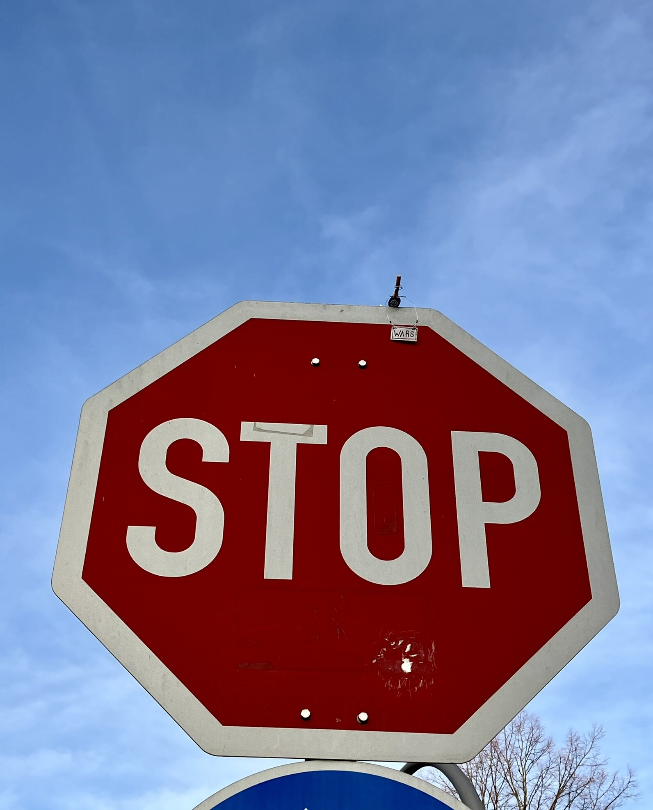
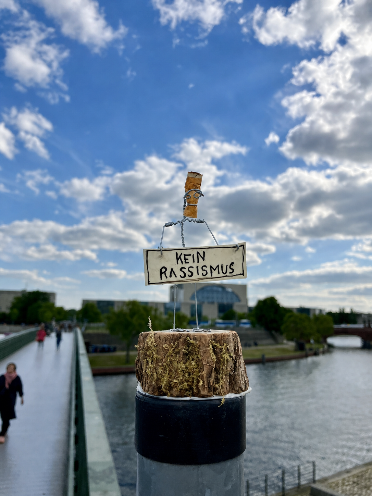
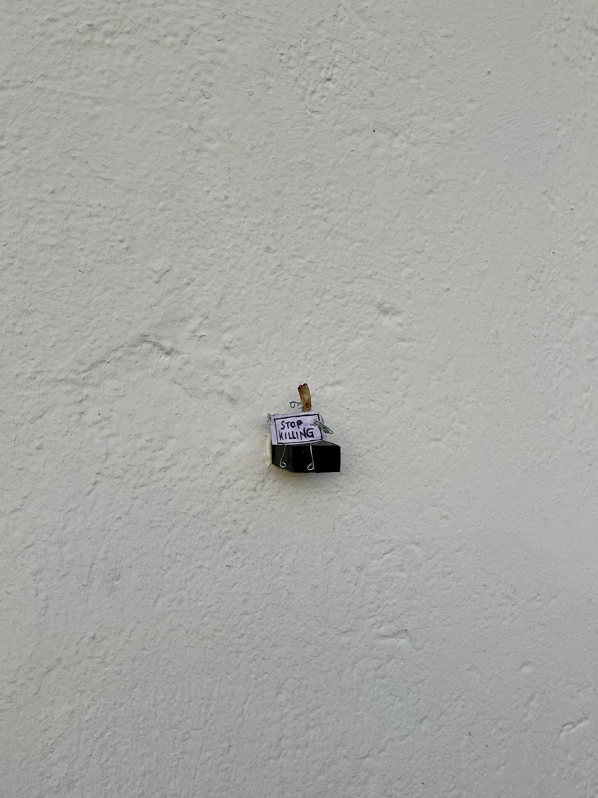
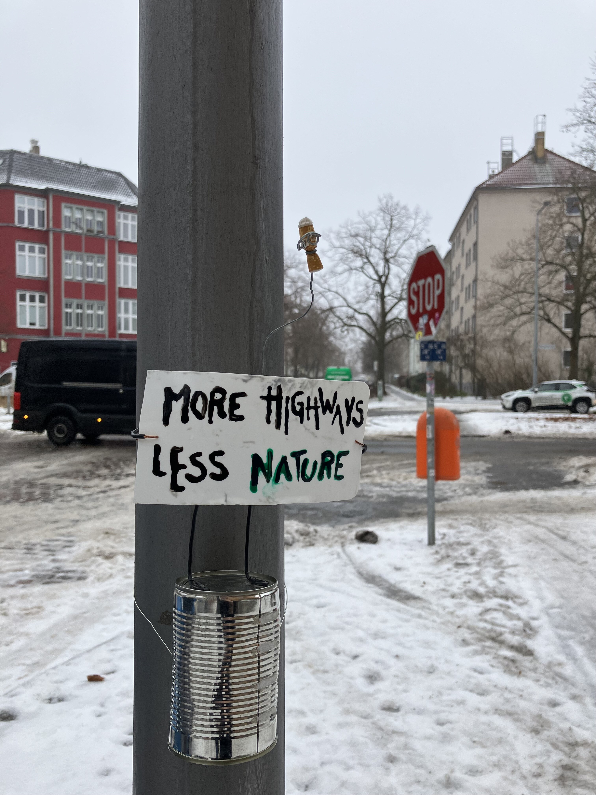

Public-space research · Experimental intervention · Paradoxical framing
Before a message can change anything, it must first be noticed.

The Peaceful Demonstrator Study is a public-space research programme by Tobias Eder. It began as a self-initiated pilot with small silent demonstrators in Berlin and now develops into a controlled research paradigm for studying how paradoxical civic messages affect attention, reflection, and meaning-making.
Enter the archive ↓




Research archive
From a question about values toward a study of attention.
The project first asked people what message they would choose for a permanent demonstration sign. The field phase made something important visible: the artwork could be destroyed, overlooked, photographed, ignored, or briefly cared for. The difficulty was not only what people value, but how an intervention becomes visible enough to invite reflection at all.
Values in public space.
The first self initiated Peaceful Demonstrator pilot placed small sculptures made from discarded materials in public space. Each sculpture acted like a quiet demonstration sign. A nearby QR code invited passersby to answer a questionnaire, including the question: “If you could have a permanent demonstration sign, what message would it convey?”
Archive gallery · Instagram Explore the earlier Peaceful Demonstrators ↗Twelve people participated. “Humans need humans” appeared twice among the responses. Because the sample was small and self selected, the answers are treated as observations rather than generalisable research findings.
What this phase revealed
The practical conditions shaped the result. When the works hung too low, some were removed or destroyed. When they were placed higher, fewer people noticed them. Participation through the QR code remained limited. The pilot therefore became less a measurement of public values and more a lesson in visibility, care, vulnerability, and attention.
The question changed.
The early version asked what values people would want to demonstrate permanently in the city. The newer version starts one step earlier: What kind of message interrupts habitual perception enough that people actually notice, pause, and think?
This shift leads toward paradoxical intervention. Instead of only presenting familiar civic values directly, the project proposes contradictions that disturb automatic agreement and invite a second look.

“Democracy works best when nobody participates.”
Testing attention in real public space.
The proposed field experiment compares paradoxical civic statements with familiar confirmative statements in everyday urban space. It does not claim immediate persuasion. It asks whether semantic contradiction creates more attention and longer engagement than conventional public messaging.
Possible observations include looking, slowing down, stopping, photographing, discussing, scanning a code, or interacting with the sculpture. The intervention remains an aesthetic encounter, while the study operationalises public engagement carefully and transparently.
The research proposal for the field experiment is available on request. Please get in touch if you would like to receive a copy or discuss potential collaboration.
Request field proposal ↗What happens inside the moment of contradiction?
The proposed EEG follow up would move the question into the laboratory. It would compare paradoxical and confirmative civic statements while examining attention, semantic integration, and later evaluative elaboration through event related brain potentials.
The aim is not to reduce art to brain data. The EEG experiment asks not only whether a contradiction is processed differently, but how this difference unfolds over time: which stages of attention, meaning making, emotional evaluation, and reflection are engaged, and how they shape a viewer’s later interpretation of the message.
The research proposal for the EEG experiment is available on request. Please get in touch if you would like to receive a copy or discuss potential collaboration.
Request EEG proposal ↗Open call
Seeking research partners, institutional collaborators, and funding.
The project is looking for collaboration with research groups, universities, and funders interested in political psychology, public space, communication, attention, experimental design, EEG, and participatory intervention.